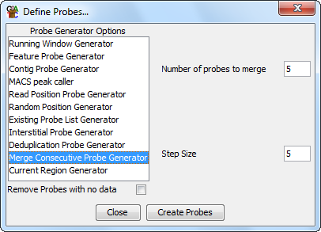

Merge Consecutive Probe Generator
The merge consecutive probe generator is a way to merge together probes in
an existing probe set. It allows you to specify a number of probes which
will then be combined together.

Options
- You can specify the number of consecutive probes you wish to merge
- You can specify the step size, ie how many probes to move on each
time you start a new merged set. If you set the step size to be the same as
the number to merge then no probe positions will be duplicated in the merged
set.